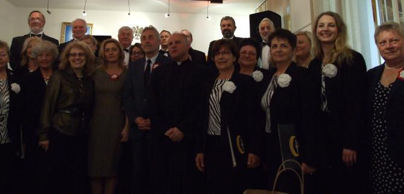

A tymczasem w Cameracie...
.
2015-05-03
Dzisiaj czeka nas pracowity dzień. Zaczynamy od próby w Domu Polskim. Jesteśmy już na miejscu. Zaczynamy próbę. Po próbie przechodzimy do kościoła. Trzeba wszystko przygotować a zwłaszcza instrument dla naszej akompaniatorki Małgorzaty Westrych. Oprawiamy muzycznie uroczystą Mszę Św. odprawianą przez proboszcza Polskiej Parafii Personalnej ks. Krzysztofa Grzelaka TChr. w intencji Ojczyzny, w Kościele Polskim p.w. NMP Wspomożycielki Wiernych w budapesztańskiej dzielnicy Kőbánya. Rozpoczynamy mszę utworem Bogurodzica. Podczas mszy na skrzypcach gra Aleksandra Szota.
Po wspaniałym i niezwykle patriotycznym w nastroju koncercie chór Camerata i goście mogli obejrzeć wystawę "Poczet królów polskich".
W tym czasie pani dyrygent … kilka zdań dla TV POLONIA


© Stowarzyszenie Muzyczne Chór Camerata Wieliczka
Projekt i wykonanie:  Prowadzenie strony: Małgorzata Wysocka-Cebula
Prowadzenie strony: Małgorzata Wysocka-Cebula